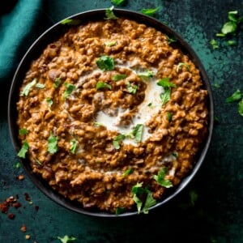

Dal makhani is an Indian dish originating in Delhi. A relatively modern variation of traditional lentil dishes, it is made with urad dal and other pulses, and includes butter and cream.
The perfect dal makhani recipe has the following ingredients:
There a few key stages to making the perfect Dal Makhani:
👩🍳PRO TIP Use a potato masher to easily and quickly mash about half of the cooked kidney beans and black lentils.
Can I make it ahead?
Yes, Make it as per the recipe upto step 9. the cool, cover and refrigerate for a couple of days until
you’re ready to serve.
When you’re ready to serve heat through the Dal Makhani until piping hot throughout then stir in the butter
and cream before serving.
Can I use regular black lentils?
I have tested this recipe with the smaller black beluga lentils and it also works if you’re struggling to
find propper makhani lentils (urad dal).
By Harpreet
Dal Makhani is a comforting, creamy and buttery lentil dish where the lentils and beans are cooked until smooth then we build up with layers of aromatic flavours. It makes the perfect side dish to go with any curry.
Prep Time:
⏱15 mins
Cook Time:
⏱2 hrs
Total Time:
⏱14 hrs 15 mins
Este es un comentario de ejemplo.
Me ha gustado mucho este artículo. ¡Gracias!